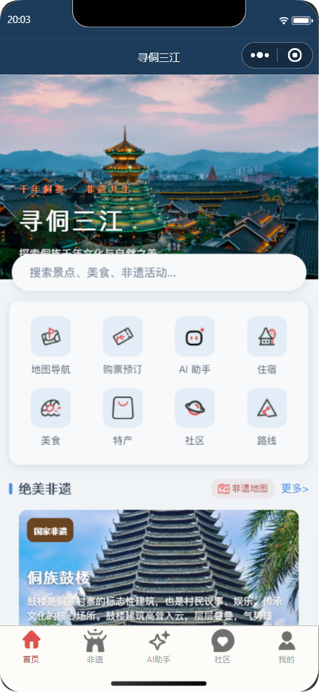
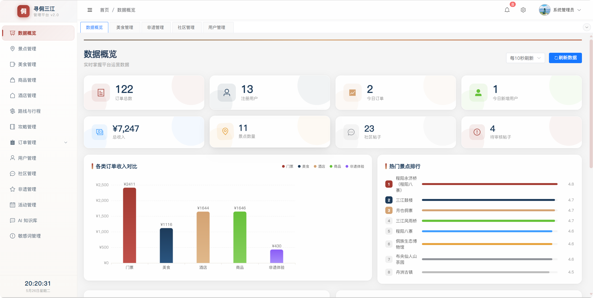
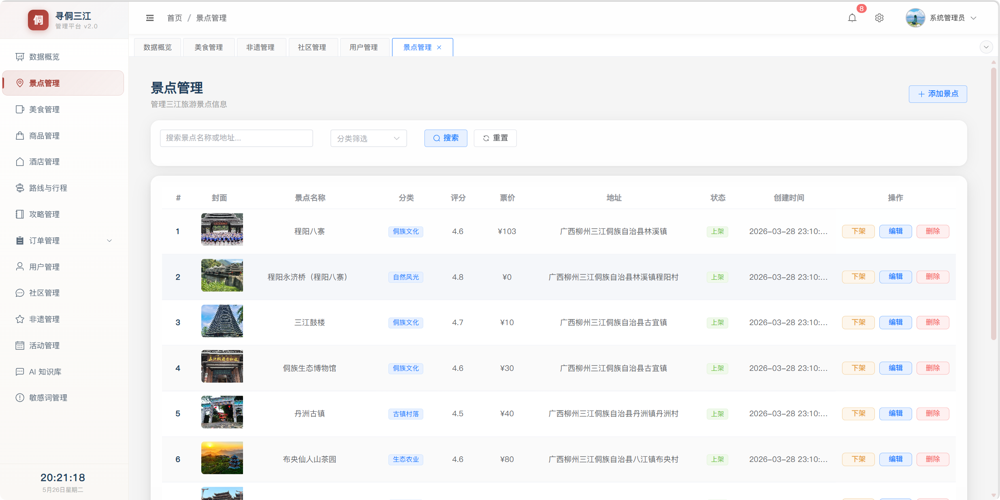
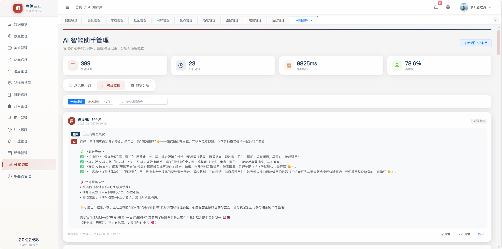

01
聚合目的地内容
将景点、侗族非遗、美食、特产、酒店与路线等信息放进一致的浏览体验。

项目围绕游客出行前后的常见任务组织服务入口：认识目的地、浏览特色内容、规划路线，并进一步连接票务、住宿、餐饮和社区体验。
将景点、侗族非遗、美食、特产、酒店与路线等信息放进一致的浏览体验。
围绕地图导航、路线、门票预订和多类订单页面，串起游客的出行服务流程。
用管理后台维护内容与订单，并提供数据概览、社区审核和 AI 知识配置入口。
以小程序首页作为统一入口，从兴趣浏览逐步过渡到路线与交易服务。
首页推荐、搜索与目的地特色内容。
浏览景点、非遗、美食、酒店与路线。
使用地图、行程与路线相关功能。
进入票务及其他订单，并参与社区互动。
游客端围绕目的地首页组织内容入口，让出行信息更容易被发现。
管理后台把内容维护、业务数据和审核操作集中在一个工作界面。



项目将游客端、管理端与业务服务拆分，核心 Java API 采用 Controller、Service、Mapper 分层结构；Node.js 服务承载 AI/MCP 辅助能力。
这版案例介绍项目的产品范围与技术结构。正式投递前，请按实际经历补齐个人负责模块和结果，用具体代码、流程或数据支撑。
避免把团队成果全部写成个人成果；没有真实统计数据时，不要填写未经验证的数字。